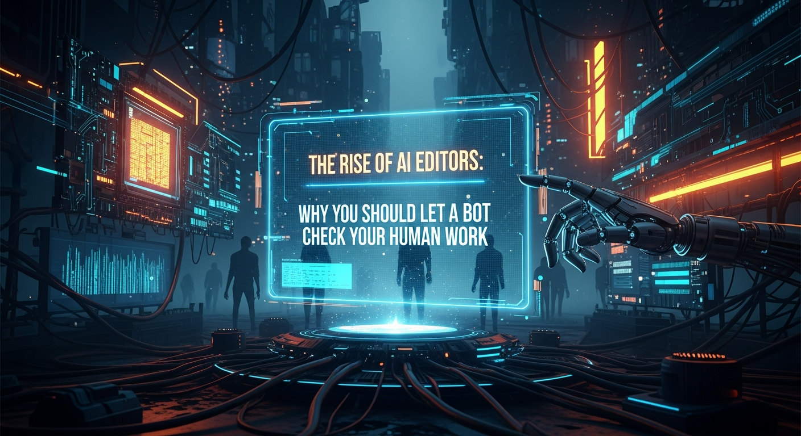

The blinking cursor on a blank page has long been the writer's most iconic nemesis. But a quieter, more insidious anxiety lurks at the other end of the creative process: the final, nerve-wracking read-through. It is in this last pass that we are forced to confront our own fallibility—the misplaced comma, the clumsy phrase, the typo that has survived a dozen revisions. For decades, our only digital safety net was the humble red squiggly line of a built-in spell-checker. Today, that safety net has evolved into an intelligent, data-driven co-pilot. We are in the era of the AI editor, a sophisticated class of software that does more than just catch mistakes; it refines, hones, and elevates human expression. This isn't a story about machines replacing writers. It's the story of a powerful new symbiosis, a partnership where human creativity is augmented by algorithmic precision. Adopting these tools is no longer a mere convenience for the digitally savvy; it is a fundamental, strategic necessity for any individual or organization serious about communicating with clarity, consistency, and impact.
The journey from primitive error-flagging to the intelligent writing assistants of today is a story of computational linguistics itself. For many, the first encounter with editing software was the iconic red squiggly line in Microsoft Word or Corel WordPerfect. These early spell-checkers were rudimentary yet revolutionary. They operated on a simple, brute-force principle: dictionary lookups. Every word in the document was checked against a massive, pre-loaded digital dictionary. If a word wasn't found, it was flagged. This system was brilliant at catching clear misspellings like "teh" or "acommodate," but it was utterly blind to context. It couldn't distinguish between "their," "there," and "they're," nor could it tell you that while "desert" is a correctly spelled word, you probably meant "dessert" in your restaurant review. This was the first, vital step, but it was a blunt instrument in a craft that demands surgical precision.
The next great leap forward introduced rule-based grammar checkers. Developers and linguists painstakingly programmed these systems with hundreds of grammatical rules. They could identify subject-verb disagreements ("The dogs runs"), sentence fragments, and incorrect punctuation usage, like a comma splice. This was a significant improvement, moving beyond the word level to the sentence structure level. However, the rigidity of these rules was also their greatest weakness. Human language is a fluid, evolving entity filled with exceptions, idioms, and stylistic variations. A rule-based system would often flag creative phrasing as an error or provide stilted, awkward suggestions because it lacked any real understanding of the writer's intent. It could tell you that a sentence was grammatically "correct" but not whether it was effective, clear, or persuasive. It was a digital grammarian who knew the textbook inside and out but had never held a real conversation.
The true revolution began with the mainstream application of Artificial Intelligence, specifically Natural Language Processing (NLP) and Machine Learning (ML). Instead of being explicitly programmed with a finite set of rules, modern AI editors are trained on colossal datasets of high-quality text—we're talking about the digital equivalent of entire libraries, from classic literature and academic journals to professional journalism and business correspondence. Through this process, ML models, particularly deep learning neural networks, learn the patterns, structures, and statistical probabilities of effective human language. They don't just know the rule that a subject and verb must agree; they have analyzed billions of examples of that agreement in countless contexts. This allows them to make much more nuanced and accurate judgments. They can understand that "The team is working" and "The team are all working on their individual tasks" are both contextually acceptable, a distinction that would baffle a simple rule-based system. This shift from prescriptive rules to predictive patterns is the single most important development in the history of editing software, transforming it from a simple proofreader into a genuine writing partner capable of sophisticated analysis.
This AI-powered foundation enables features that were once science fiction. Today's leading tools go far beyond grammar and spelling to provide a full suite of rhetorical analysis. Tone detection algorithms analyze word choice, phrasing, and punctuation to tell you if your email sounds confident, friendly, or inadvertently aggressive. Clarity and readability scores, using metrics like the Flesch-Kincaid Grade Level, assess whether your text is accessible to your intended audience, suggesting you replace jargon-filled, convoluted sentences with simpler alternatives. Style suggestions actively hunt for passive voice, wordiness, and repetitive sentence structures, helping you craft prose that is more dynamic and engaging. Finally, integrated plagiarism detectors can cross-reference your work against billions of web pages and academic papers in seconds, providing a crucial layer of academic and professional integrity. The red squiggle has not disappeared, but it is now just one small feature in an intelligent dashboard dedicated to the holistic improvement of human writing.
The most compelling reason to use an AI editor has less to do with technology and more to do with the inherent limitations of the human brain. We are, quite simply, terrible editors of our own work. This isn't a sign of carelessness or a lack of skill; it's a hardwired cognitive phenomenon. When we write, our brain is operating at a very high level of abstraction, juggling ideas, arguments, and narrative structure. When we then switch to editing, it's incredibly difficult to turn that high-level function off. Our brain already knows the intended meaning, the perfect phrasing we were aiming for. Consequently, it often reads what it expects to see on the page, not what is actually there. This form of "cognitive blindness" causes us to skim right over a missing "the" or a glaring typo because our mind automatically corrects it during the act of reading. The AI, devoid of any prior knowledge of our intent, has no such bias. It analyzes the text literally and logically, catching the objective errors our biased brains are primed to ignore.
A fascinating illustration of this is a phenomenon related to "typoglycemia," popularized by a viral email claiming that as long as the first and last letters of a word are in place, people can read jumbled text with ease. While the claims in that specific email were exaggerated, the underlying principle is sound: our brains are exceptionally good at pattern recognition and using context to create meaning, often at the expense of detail. This makes us efficient readers but sloppy proofreaders. An AI editor operates on the opposite principle. It has zero reliance on holistic context for basic error detection and instead scrutinizes every single character, word, and punctuation mark against its learned models. It is the ultimate detail-oriented assistant, immune to the shortcuts and assumptions our brains naturally make.
Humanize your text and bypass any AI detector instantly with Undetectable AI.
BYPASS AI DETECTION NOWFurthermore, human editing is a mentally exhaustive process that is highly susceptible to decision fatigue. A professional editor makes thousands of micro-decisions in a single manuscript, evaluating everything from comma placement to word choice. Over time, the quality of these decisions inevitably degrades. The error you might catch on page one when you are fresh and focused is the same error you are likely to miss on page fifty after hours of work. An AI editor suffers no such fatigue. Its analytical rigor is identical for the ten-thousandth word as it was for the first. It can process a 300-page book with the same unwavering attention to detail at 3 AM as it can at 9 AM, ensuring a level of consistency that is practically impossible for a human to achieve manually. This is particularly crucial for maintaining adherence to a specific style guide across long or numerous documents. An AI can be programmed with a company's unique rules—always use the serial comma, spell out numbers below 10, capitalize a specific product name—and enforce them flawlessly every single time, eliminating the inconsistencies that arise from human memory lapses.
By delegating the mechanical and repetitive aspects of editing to a machine, we liberate our finite cognitive resources to focus on what humans do best. Instead of spending mental energy hunting for typos and grammatical slips, the writer or human editor can now concentrate on higher-order concerns. Is the argument coherent and persuasive? Is the story's pacing effective? Does the introduction hook the reader? Is the conclusion satisfying? Does the overall piece achieve its strategic goal? An AI editor acts as a cognitive filter, clearing away the low-level noise of objective errors so that the human mind can engage in the deep, critical thinking that no algorithm can replicate. It's a partnership that doesn't diminish the human role but rather elevates it, allowing us to transition from mere proofreaders to true architects of meaning and impact.
The market for AI-powered writing assistants has exploded, but a few key players have emerged as leaders, each with distinct strengths tailored to different types of users. Understanding their unique value propositions is key to choosing the right digital co-pilot for your writing needs. These tools are no longer just applications you open; they are integrated platforms that follow you across the web, into your documents, and throughout your daily communications.
At the forefront is Grammarly, a name that has become almost synonymous with the category itself. Its success lies in its accessibility and seamless integration. Grammarly operates on a freemium model, with a robust free version that offers excellent spelling, grammar, and punctuation checks. Its browser extensions for Chrome, Safari, and Firefox are its killer feature, providing real-time feedback directly within Gmail, Google Docs, LinkedIn, and countless other text fields on the web. The premium and business tiers unlock a host of advanced AI features. Its celebrated tone detector analyzes your writing and offers a "tone profile," helping you ensure your message is perceived as intended—be it confident, empathetic, or formal. It also provides powerful suggestions for improving clarity, engagement, and delivery, often rephrasing entire sentences to be more concise and impactful. For individuals and small teams looking for a comprehensive, user-friendly, all-around solution, Grammarly is often the default choice.
For authors, academics, and long-form content creators who require a deeper level of analysis, ProWritingAid stands out as a powerful alternative. While Grammarly is a sleek sedan, ProWritingAid is more like a full diagnostic workshop. Its core strength lies in its extensive and detailed reporting. It offers over 20 different reports that dissect your writing from every conceivable angle. The "Style Report" flags passive voice and "weasel words," the "Sentence Length Report" creates a visual graph of your sentence variety to help improve flow, and the "Pacing Report" identifies slower-moving paragraphs to help... and implement these strategies to ensure long-term success.
In summary, staying ahead of these trends is the key to business longevity and security. By following this guide, you maximize your growth and ensure a stable digital future.
Don't wait for the headlines. Our Private Telegram Channel delivers real-time AI security updates and digital wealth strategies before they go viral. Stay protected. Stay ahead.
⚡ JOIN THE 1% NOWNo sign-up required. Instantly check risks, analyze AI text, or calculate your digital finances.